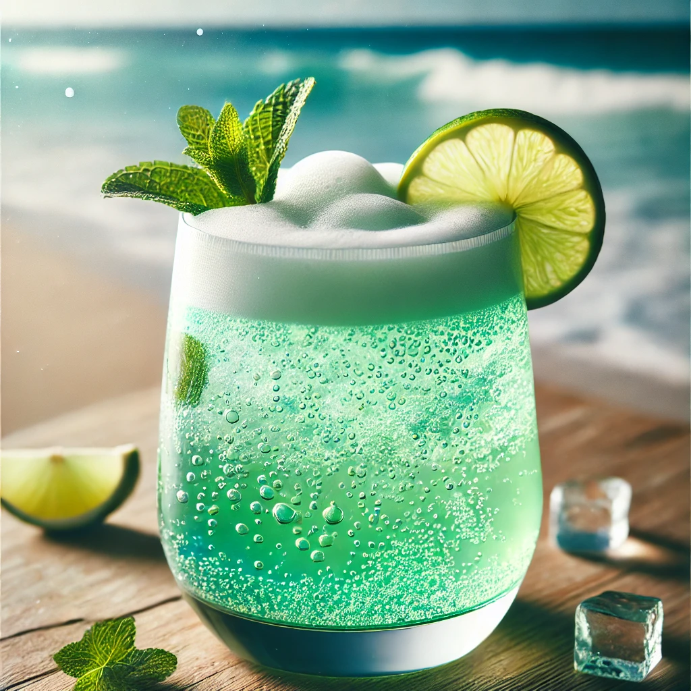

THE BUSTY MERMAID

Sea Foam Fizz
Ingredienser og Oppskrift:
Hopp ombord på et bølgende eventyr med **Sea Foam Fizz**, drinken som fanger sjøens spenning og magi i et glass. Denne boblende og forfriskende drinken er perfekt for de som ønsker å nyte en beroligende smak av havet, med en spenning som kan minne om en bølge som bryter mot kysten.
Så, hva gjør denne drinken til en skumfin opplevelse? Her er oppskriften på å kaste deg inn i det store blå:
- 1 del **gin** (for den skarpe smaken av eventyr)
- 1 del **søt limejuice** (for den forfriskende smaken av sjøbris)
- 1 del **sitronsoda** (som et sprudlende skum på bølgetoppene)
- 1 del **fersk agurkjuice** (som den kjølige sjøen på en varm dag)
- Et dash **blå curacao** (for å gi drinken den fantastiske sjøgrønne fargen)
Hvordan lage denne drinken:
- Fyll en shaker med is og tøm alle ingrediensene oppi.
- Rist hardt, som om du kaster deg inn i et eventyr med bølger som omfavner deg.
- Sil drinken i et høyt glass fylt med is og topp med sitronsoda.
- Skål for eventyret, og la sjøen fylle deg med ny energi!
OBS: Denne drinken er kjent for å få folk til å føle seg som om de er på et vakkert skjær i havet – med en liten bølge av spenning!